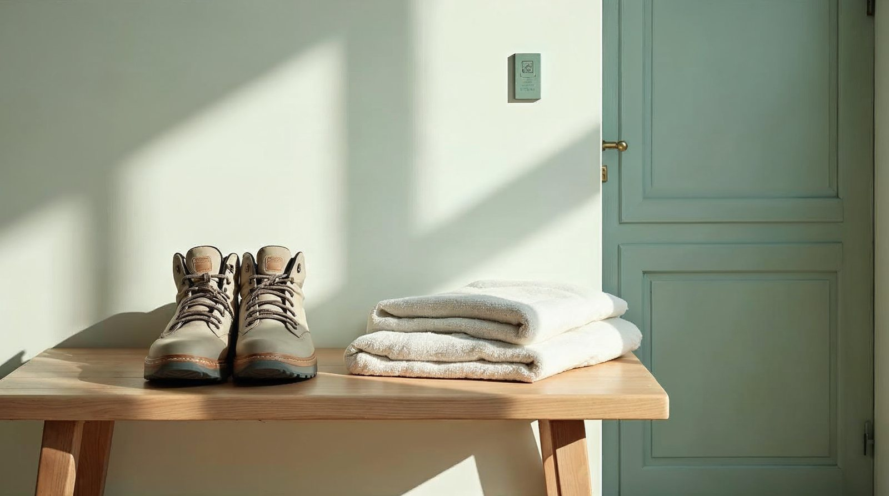
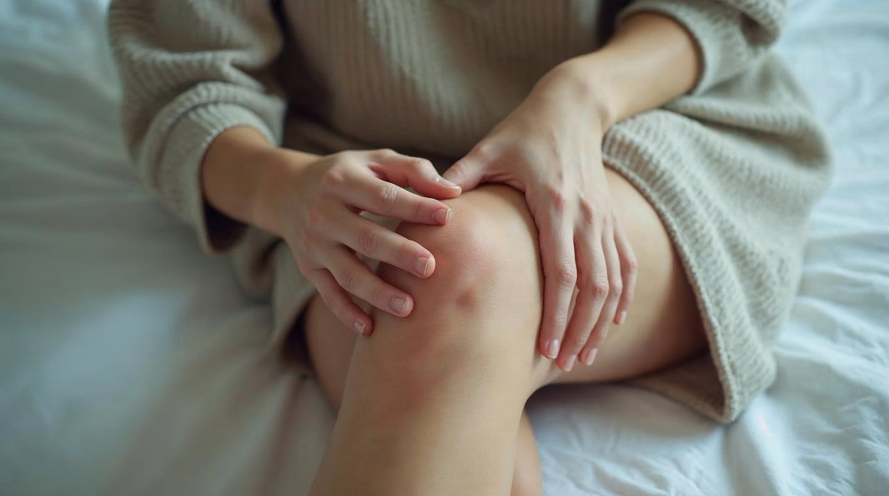

이종호 한의사 감수좋은꿈참사랑한의원 대표원장 (한의사 면허번호 19769)발행 2026-11-23 · 수정 2026-11-26
이 글의 차례
- 왜 이런 불편이 생길 수 있나요
- 왜 산행 당일보다 하루 이틀 뒤에 더 아플까요?
- 종아리 근육통은 비슷한 다른 불편과 어떻게 구분하나요?
- 먼저 이렇게 여쭙니다
- 초음파 화면에서는 무엇을 함께 보나요?
- 일상에서 먼저 해 볼 수 있는 것
- 회복하는 동안에는 어떻게 움직이면 좋을까요?
- 상황별 예시
- 스스로 점검해 보세요
- 다음 산행은 어떻게 준비하면 좋을까요?
- 한의원에서 함께 살필 수 있는 경우
- 평소에는 종아리를 어떻게 챙겨 두면 좋을까요?
- 다시 산에 가도 될지 스스로 가늠하는 방법이 있을까요?
- 첫 방문은 이렇게 진행됩니다
- 얼마나 지켜보고 언제 상담할까요
- 이렇게 기록해 오시면 상담이 쉬워집니다
- 이런 증상은 먼저 확인이 필요합니다
- 관련 글
등산 뒤 종아리가 뭉치고 아플 때 초음파로는 근육 결이 흐트러졌는지, 근육 사이에 피가 고였는지 같은 상태를 확인해 볼 수 있습니다. 관악산이나 국사봉 산책로를 다녀온 뒤 며칠째 종아리가 딴딴하고 아프다는 분들이 있습니다. 대부분은 쉬면서 나아지지만, 산에서 '툭' 하는 느낌이 있었다면 더 자세히 살펴야 합니다.
양쪽이 고르게 뻐근한 정도라면 지켜볼 수 있는 경우가 많습니다. 다만 한쪽 한 지점이 계속 아프다면 초음파로 근육을 함께 보는 것이 이야기를 정리하는 데 도움이 될 수 있습니다.
왜 이런 불편이 생길 수 있나요
- 내리막을 걸을 때 종아리 근육은 늘어나면서 몸을 받쳐 주는 브레이크 역할을 해, 평소보다 큰 부담을 받습니다.
- 평소 걷지 않던 거리를 한 번에 걸으면 다음 날부터 이틀쯤 근육이 뻐근해지는 경우가 많습니다.
- 갑자기 힘을 주는 순간 '툭' 하는 느낌이 있었다면 근육 일부가 손상됐을 가능성도 있어 구분이 필요합니다.
- 종아리 붓기와 통증은 드물게 혈관 문제와도 관련될 수 있어 위험 신호를 먼저 확인합니다.
- 오르막에서 발끝으로 밀어 올리는 동작이 길게 이어지면 종아리 안쪽 근육과 아킬레스힘줄 쪽에도 부담이 쌓일 수 있습니다.
- 물을 충분히 마시지 못한 채 오래 걷거나, 추운 날 몸이 덜 풀린 상태로 산행을 시작하면 근육이 쉽게 뭉치고 쥐가 나기도 합니다.
왜 산행 당일보다 하루 이틀 뒤에 더 아플까요?
산에서 내려올 때는 괜찮았는데 다음 날 아침 계단을 내려가다 깜짝 놀랐다는 분이 많습니다. 내리막에서 근육이 늘어나며 버티는 동안 근육 속에 아주 작은 부담이 쌓이고, 몸이 이를 회복하는 과정에서 하루 이틀 뒤에 붓기와 뻐근함이 올라오기 때문입니다.
이런 근육통은 양쪽에 비슷하게 오고, 움직이기 시작할 때 가장 뻐근하다가 조금 걸으면 풀리는 경우가 많습니다. 반대로 산에서 바로 아프기 시작해 한 지점이 계속 아프다면 근육이 놀란 정도가 다를 수 있어, 아프기 시작한 때를 꼭 여쭙습니다.
종아리 근육통은 비슷한 다른 불편과 어떻게 구분하나요?
등산 뒤 다리가 아프다고 오시면 저는 먼저 아픈 자리를 손바닥 전체로 가리켜 달라고 합니다. 넓게 뻐근한지, 손가락 하나로 짚을 수 있는 한 점이 아픈지에 따라 살필 방향이 달라지기 때문입니다.
- 양쪽 종아리가 넓게 뻐근하고, 계단을 내려갈 때 특히 당긴다면 내리막에서 쌓인 근육통인 경우가 많습니다.
- 종아리 안쪽 아래, 근육이 힘줄로 바뀌는 자리 한 점이 아프다면 근육 일부가 놀란 경우를 먼저 생각합니다.
- 발뒤꿈치 바로 위의 굵은 힘줄을 쥐었을 때 아프다면 아킬레스힘줄 쪽을 봅니다.
- 종아리보다 정강이 앞쪽이 아프다면 내리막에서 발목을 버티느라 앞쪽 근육이 지친 경우도 있습니다.
- 허리나 엉덩이에서 종아리까지 저리게 뻗친다면 근육보다 허리 쪽 신경을 함께 살핍니다.
산에서 쥐가 나서 한동안 아팠던 분도 계십니다. 쥐는 대개 몇 분 안에 풀리지만, 그 뒤로 며칠 동안 뻐근함이 남을 수 있어 쥐가 난 시점과 횟수도 함께 여쭙니다.
먼저 이렇게 여쭙니다
- 산에서 내려올 때 '툭' 하는 느낌이 있었나요?
- 종아리 어느 부위가 가장 아픈가요?
- 멍이나 붓기가 보이나요?
- 발끝으로 서는 것이 가능한가요?
- 평소 얼마나 자주 산에 가시나요?
- 최근 오래 차를 탔거나 수술을 받았거나, 호르몬제를 드시나요?
초음파 화면에서는 무엇을 함께 보나요?
필요하다고 판단되면 엎드린 자세에서 양쪽 종아리를 번갈아 화면에 띄웁니다. 아프지 않은 쪽을 먼저 보고 아픈 쪽을 이어서 보면 결의 차이가 잘 드러납니다.
- 근육 결이 반대쪽처럼 가지런히 보이는지, 일부가 흐트러져 보이는지
- 근육과 근육 사이, 또는 근육과 힘줄 사이에 피나 물이 고인 듯 어둡게 보이는 자리가 있는지
- 그 범위가 어느 정도인지, 손으로 짚어 아팠던 지점과 겹치는지
- 발목을 위아래로 움직일 때 근육이 매끄럽게 미끄러지는지
화면에서 달라 보이는 곳이 있으면 다음 방문 때 같은 자리를 다시 보며 비교하는 기준으로 삼습니다. 다만 혈관 상태를 보는 검사는 아니어서, 그쪽이 걱정되면 병원 검사를 먼저 안내합니다.
일상에서 먼저 해 볼 수 있는 것
- 통증이 심한 동안은 등산을 쉬기
- 걸을 때 보폭을 줄이기
- 종아리를 세게 주무르지 않기(특히 '툭' 하는 느낌이 있었다면)
- 내리막에서는 스틱을 쓰고 천천히 걷기
- 다시 산에 갈 때는 짧은 코스부터 시작하기
- 산행 전후로 물을 충분히 마시고, 소변 색이 평소보다 진하지 않은지 살펴보기
- 오래 앉아 있을 때는 발목을 위아래로 천천히 움직여 종아리를 가볍게 풀어 주기
회복하는 동안에는 어떻게 움직이면 좋을까요?
아프다고 며칠 내내 꼼짝하지 않으면 오히려 뻣뻣함이 오래가는 경우가 있습니다. 통증이 크게 늘지 않는 범위에서 조금씩 움직여 주는 것이 회복에 도움이 되는 경우가 많습니다.
- 앉거나 누운 채로 발목을 위아래로 천천히 움직이기를 한 번에 열 번쯤, 하루에 여러 번
- 평지를 10~20분 가볍게 걷되, 걷고 난 다음 날 통증이 늘지 않는지 살피기
- 근육통만 있을 때는 벽을 짚고 종아리를 부드럽게 늘리기(당기는 느낌까지만, 아플 만큼은 하지 않기)
- 미지근한 물로 샤워하며 종아리를 손바닥으로 쓸어내리듯 가볍게 풀기
'툭' 하는 느낌이 있었던 경우라면 늘리기와 마사지는 미뤄 두고, 진찰을 받은 뒤 언제부터 해도 될지 함께 정합니다.

상황별 예시
- 예를 들어 주말에 오랜만에 긴 코스를 다녀온 직장인이 다음 날부터 양쪽 종아리가 고르게 뻐근하고 이틀째 가장 심하다면, 산행을 며칠 쉬고 평지를 가볍게 걸으며 지켜봅니다. 일주일쯤 지나도 줄지 않으면 그때 상담을 받아 보세요.
- 예를 들어 오르막 바위를 딛고 힘껏 밀어 올리다 종아리 안쪽에 '툭' 하고 뒤에서 맞은 듯한 통증을 느낀 경우라면, 며칠 뒤 발목 쪽으로 멍이 내려오기도 합니다. 이럴 때는 주무르지 말고 일찍 확인해, 필요하면 초음파로 근육 결과 고인 피를 함께 봅니다.
- 예를 들어 하산길에 서둘러 뛰듯이 내려온 뒤 양쪽 정강이 앞쪽과 종아리가 함께 뻐근한 경우라면, 내리막에서 발목을 버티느라 앞뒤 근육이 모두 지친 것일 수 있습니다. 다음 산행에서는 내리막 속도를 줄이고 스틱을 써 보는 것부터 함께 정합니다.

스스로 점검해 보세요
- 산행 다음 날부터 양쪽 종아리가 고르게 뻐근하고, 이틀째 가장 심하다.
- 산에서 '툭' 하는 느낌이나 뒤에서 맞은 듯한 통증이 있었다.
- 종아리 한 지점을 누르면 콕 집어 아프다.
- 며칠 뒤 종아리나 발목 쪽으로 멍이 번졌다.
- 발끝으로 서거나 계단을 오르기가 어렵다.
첫 항목만 해당하면 쉬면서 지켜볼 수 있는 경우가 많고, 둘째부터 다섯째까지는 확인을 받아 볼 신호입니다.
다음 산행은 어떻게 준비하면 좋을까요?
종아리가 아팠던 분께 다시 산에 가지 말라고 말씀드리지는 않습니다. 대신 다음 산행에서 종아리가 받는 부담을 나눠 줄 방법을 함께 찾습니다.
- 산에 들어서기 전 5분쯤 평지를 걸으며 발목과 종아리를 먼저 데우기
- 처음 몇 번은 관악산 큰 코스보다 국사봉 둘레처럼 짧고 완만한 길부터 다시 걸어 보기
- 내리막에서는 보폭을 줄이고 스틱 두 개로 체중을 나누기
- 오르막에서 발끝으로만 밀지 말고 발 전체로 디디기
- 한 시간마다 물을 몇 모금씩 마시고, 땀을 많이 흘린 날은 쉬는 시간을 늘리기
- 바닥이 닳은 등산화는 미끄러지며 종아리에 힘이 더 들어갈 수 있어 밑창 상태 확인하기
산행을 마친 날 저녁과 다음 날 아침에 종아리가 어땠는지 짧게 적어 두면, 어느 정도 코스가 지금 몸에 맞는지 가늠하기 쉬워집니다. 코스를 늘리는 것은 그 기록이 두세 번 연속 편안했을 때로 미뤄 두셔도 늦지 않습니다.
한의원에서 함께 살필 수 있는 경우
- 종아리 통증이 이어지는 경우 필요하다고 판단되면 초음파로 근육 상태를 확인합니다.
- 근육이 놀란 정도에 맞춰 침, 온열 등을 검토하고 운동 재개 시기를 함께 정합니다.
- 다른 검사가 필요하다고 판단되면 다른 의료기관을 안내합니다.
평소에는 종아리를 어떻게 챙겨 두면 좋을까요?
주말에만 산에 가고 주중에는 대부분 앉아 지내는 분이 산행 뒤 종아리가 크게 뭉치는 경우가 많습니다. 산에서 쓰는 힘과 평소 쓰는 힘의 차이가 클수록 근육이 놀라기 쉽기 때문입니다.
- 양치하는 동안 벽이나 세면대를 짚고 뒤꿈치를 천천히 들었다 내리기를 10~15번
- 두세 층 정도는 계단으로 오르고, 내려올 때는 난간을 잡고 천천히 내려오기
- 한 시간 넘게 앉아 있었다면 일어나 제자리에서 발끝 서기를 몇 번 하기
- 주중에 한두 번은 동네 언덕길을 30분쯤 걸어 다리를 미리 익숙하게 해 두기
뒤꿈치 들기는 양쪽 횟수가 비슷한지도 함께 봐 주세요. 한쪽이 유난히 빨리 지친다면 그쪽 종아리가 산행에서 먼저 뭉칠 수 있어 진료 때 알려 주시면 도움이 됩니다.
다시 산에 가도 될지 스스로 가늠하는 방법이 있을까요?
아래 순서대로 해 보고, 한 단계가 편해지면 다음 단계로 넘어가 보세요. 중간에 아프면 그 단계에서 며칠 더 머뭅니다.
- 평지를 30분쯤 보통 걸음으로 걸어도 다음 날 아침 종아리가 더 아프지 않다.
- 아팠던 쪽 한 발로 발끝 서기를 열 번 해도 반대쪽과 비슷하게 할 수 있다.
- 계단 두세 층을 내려올 때 종아리가 당기지 않는다.
- 빠른 걸음으로 언덕길을 10분쯤 올라도 불편이 없다.
네 가지가 모두 편하다면 짧고 완만한 코스부터 다시 시작해 볼 수 있는 경우가 많습니다. 판단이 어려우면 진료 때 같은 동작을 함께 해 보며 정합니다. 처음 다시 가는 날은 혼자보다 일행과 함께 가시면 마음이 한결 놓입니다.
첫 방문은 이렇게 진행됩니다
- 이야기 듣기: 다녀온 산과 코스, 아프기 시작한 순간, '툭' 하는 느낌, 멍과 붓기, 복용 중인 약을 먼저 듣습니다.
- 맥 짚기와 몸 살피기: 모든 분께 맥부터 짚어 피로와 잠, 몸의 붓기, 손발의 온기까지 몸 전체 상태를 살핍니다.
- 다리 확인: 걷는 모습과 발끝 서기, 계단 내려가기 동작을 보고, 양쪽 종아리를 비교하며 눌러 가장 아픈 지점을 찾습니다.
- 초음파로 함께 보기: 필요하다고 판단될 때 아픈 근육의 결과 근육 사이에 고인 것이 있는지 반대쪽과 비교하며 화면으로 함께 봅니다.
- 방향 정하기: 침, 약침, 온열 가운데 상태에 맞는 방법을 정하고, 다시 산에 가도 되는 시점을 판단할 기준과 그동안 할 수 있는 가벼운 움직임을 알려 드립니다.
- 다음 방문: 지난번 불편했던 발끝 서기와 계단 내려가기가 그사이 어땠는지 이어서 여쭙고 같은 동작으로 다시 비교합니다.
얼마나 지켜보고 언제 상담할까요
- '툭' 하는 느낌 없이 양쪽이 고르게 뻐근한 근육통은 보통 이틀째 무렵 가장 심하고 일주일 안팎으로 줄어드는 경우가 많아, 그동안 산행을 쉬며 지켜볼 수 있습니다.
- 일주일이 지나도 줄지 않거나, 한쪽 한 지점의 통증이 이어지면 상담을 받아 보세요.
- '툭' 하는 느낌 뒤 걷기가 불편하거나 멍이 번지면 며칠 기다리기보다 일찍 확인합니다.
뻐근함이 줄어드는 속도는 사람마다 다릅니다. 평소 운동량, 잠, 그 주에 얼마나 지쳐 있었는지에 따라 같은 코스를 다녀와도 회복이 더디게 느껴질 수 있습니다. 그래서 저는 종아리뿐 아니라 요즘 잠은 어떤지, 일이 몰리는 시기인지도 함께 여쭙습니다.
매일 아침 계단을 내려갈 때의 느낌을 '어제보다 덜함, 비슷함, 더함' 세 가지 가운데 하나로 적어 보세요. 짧은 기록이라도 며칠 모이면 지켜볼지 상담을 받을지 정하기가 훨씬 쉬워집니다.
이렇게 기록해 오시면 상담이 쉬워집니다
- 다녀온 산과 코스, 걸린 시간
- 통증이 시작된 순간(산행 중, 그날 저녁, 다음 날)
- 멍이나 붓기가 생긴 날과 범위(사진)
- 계단 오르내리기, 발끝 서기가 되는지
- 산까지 오간 방법과 차를 탄 시간, 복용 중인 약
이런 증상은 먼저 확인이 필요합니다
- 한쪽 종아리가 갑자기 붓거나 붉어지거나 뜨거워진 경우, 숨이 차거나 가슴이 아픈 경우
- 무리한 뒤 소변 색이 콜라처럼 진해진 경우
이런 신호가 있으면 한의원보다 가까운 병원이나 응급실을 먼저 찾으세요.
관련 글
- 무릎 뒤쪽이 불룩하고 당길 때 초음파로 무엇을 보나요?
- 겨울밤 자다가 종아리에 쥐가 나서 깨는 것은 어떻게 살피나요?
- 아침마다 내리막길로 출근하는데 정강이 앞쪽과 발목이 뻐근할 때는 어떻게 살피나요?

여쭙는 것
- 산에서 내려올 때 '툭' 하는 느낌이 있었나요?
- 종아리 어느 부위가 가장 아픈가요?
- 멍이나 붓기가 보이나요?
생활에서 해 볼 것
- 통증이 심한 동안은 등산을 쉬기
- 걸을 때 보폭을 줄이기
- 종아리를 세게 주무르지 않기(특히 '툭' 하는 느낌이 있었다면)
한의원에서 함께 살필 것
- 종아리 통증이 이어지는 경우 필요하다고 판단되면 초음파로 근육 상태를 확인합니다.
- 근육이 놀란 정도에 맞춰 침, 온열 등을 검토하고 운동 재개 시기를 함께 정합니다.
- 다른 검사가 필요하다고 판단되면 다른 의료기관을 안내합니다.
먼저 확인이 필요한 신호
- 한쪽 종아리가 갑자기 붓거나 붉어지거나 뜨거워진 경우, 숨이 차거나 가슴이 아픈 경우
- 무리한 뒤 소변 색이 콜라처럼 진해진 경우
한눈에 보는 표
| 구분 | 핵심 |
|---|---|
| 여쭙는 것 | 산에서 내려올 때 '툭' 하는 느낌이 있었나요? 종아리 어느 부위가 가장 아픈가요? |
| 생활에서 해 볼 것 | 통증이 심한 동안은 등산을 쉬기 걸을 때 보폭을 줄이기 |
| 한의원에서 함께 살필 것 | 종아리 통증이 이어지는 경우 필요하다고 판단되면 초음파로 근육 상태를 확인합니다. 근육이 놀란 정도에 맞춰 침, 온열 등을 검토하고 운동 재개 시기를 함께 정합니다. |
| 먼저 확인이 필요한 신호 | 한쪽 종아리가 갑자기 붓거나 붉어지거나 뜨거워진 경우, 숨이 차거나 가슴이 아픈 경우 무리한 뒤 소변 색이 콜라처럼 진해진 경우 |
자주 묻는 질문
근육이 찢어졌는지 초음파로 알 수 있나요?
근육 결의 변화나 고인 피를 확인하는 데 도움이 되지만, 경우에 따라 다른 검사가 필요할 수 있습니다. 화면만 보지 않고 아픈 지점을 누르는 진찰과 발끝 서기 같은 동작을 함께 보고 판단합니다.
언제부터 다시 등산해도 되나요?
통증과 걷는 모습을 보고 함께 정합니다. 평지를 30분쯤 걷고 계단을 내려가거나 발끝으로 설 때 아프지 않다면 짧고 완만한 코스부터 다시 시작해 보는 경우가 많습니다.
찜질은 차갑게 하나요, 따뜻하게 하나요?
부딪히거나 '툭' 하는 느낌이 있은 뒤 처음 이틀쯤은 차갑게, 붓기 없이 뻐근할 때는 따뜻하게 하는 편이 일반적입니다. 헷갈리면 진료 때 여쭤보세요.
종아리 압박 스타킹이나 보호대를 신어도 되나요?
산행 중 근육의 흔들림을 줄이려고 신는 분들이 있습니다. 너무 꽉 끼어 저리거나 발끝 색이 변하지 않는 정도를 고르시고, 아픈 동안 계속 신어도 될지는 진료 때 함께 이야기합니다.
진료 시간은 어떻게 되나요?
좋은꿈참사랑한의원은 평일 09:30~20:00(점심 13:00~14:00), 토·일·공휴일 09:30~15:00에 진료합니다.
좋은꿈참사랑한의원은 재진 때 지난번 이야기부터 이어서 여쭙니다. 진료시간과 예약은 오시는 길에서 확인하세요.
어디서 상담받을 수 있나요?
좋은꿈참사랑한의원은 서울 동작구 만양로2길 2 신성빌딩 3층·5층(서울 동작구 상도동, 7호선 상도역 3번 출구 근처)에 있습니다. 한의사 3명(이종호 대표원장, 조영기 수석진료원장, 정원영 진료원장)이 진료합니다. 진료시간은 평일 09:30~20:00(점심 13:00~14:00), 토·일·공휴일 09:30~15:00이며, 방문 전 전화로 확인을 권합니다. 예약은 네이버 예약, 카카오톡 상담, 전화 02-815-7510로 받습니다.
이 글은 일반적인 건강 정보이며 개인의 진단이나 치료를 대신하지 않습니다. 증상이 있거나 복용 중인 약이 있다면 진료를 통해 확인하세요. 치료 효과는 개인마다 다를 수 있습니다.
작성 기준: 일반적으로 알려져 있는 건강 정보를 참고해 정리했습니다(대표원장 감수). 증상 기록은 1~2주 동안 하루 1회, 비슷한 시간에 적어 오시면 지난 상태와 비교하기 쉽습니다.